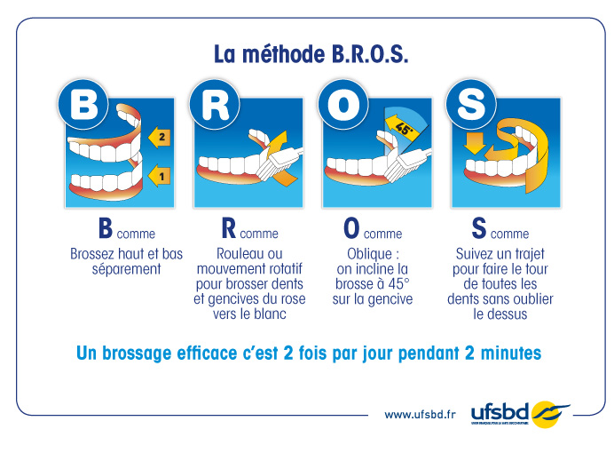

Le brossage des dents
La méthode BROS®, recommandée par l’UFSBD, est idéale dès 9 ans, même si l’enfant n’a pas encore toutes ses dents définitives, et se conserve pour toute la vie.

La méthode B.R.O.S. en quatre étapes
Source : UFSBD (Union Française pour la Santé Bucco-Dentaire)
2 fois par jour, pendant 2 minutes : un bon brossage permet d’éliminer la plaque dentaire et de limiter le risque de caries et de maladies des gencives. Pour être efficace, le geste compte autant que le temps passé à se brosser les dents.
La méthode BROS en 4 étapes
B comme Brosser
Brossez les dents du haut et du bas séparément. Commencez par les dents du haut, puis passez aux dents du bas. Gardez la bouche suffisamment ouverte pour bien voir les zones que vous brossez.
R comme Rouleau
Faites rouler la brosse de la gencive vers la dent. Pour les dents du haut, allez du haut vers le bas ; pour les dents du bas, allez du bas vers le haut. Évitez les mouvements horizontaux répétés, qui peuvent être agressifs pour les gencives.
O comme Oblique
Inclinez votre brosse à environ 45° au niveau de la gencive, brins placés à la jonction entre la dent et la gencive. Cette position permet de nettoyer efficacement cette zone où la plaque dentaire s’accumule facilement.
S comme Suivre
Suivez toujours le même parcours, en faisant le tour de toutes vos dents sans oublier aucune face : côté joue et lèvres, côté langue ou palais, dessus des dents. Commencer toujours au même endroit permet de réduire le risque d’oublier une zone.
Les bons réflexes
- Une brosse souple : privilégiez une brosse à dents à poils souples et à tête adaptée à votre bouche.
- Un dentifrice fluoré : utilisez un dentifrice fluoré adapté à votre âge et à votre situation bucco-dentaire.
- Deux fois par jour : brossez vos dents le matin et le soir, pendant environ 2 minutes.
- Sans appuyer fort : un brossage efficace ne nécessite pas de forte pression. Laissez les brins de la brosse travailler.
- Changez régulièrement votre brosse : remplacez-la lorsqu’elle est usée, et au minimum tous les 3 mois.
Le fil dentaire et les brossettes
La brosse à dents ne nettoie pas complètement les espaces entre les dents. Selon la taille de vos espaces interdentaires, votre chirurgien-dentiste peut vous conseiller l’utilisation de fil dentaire ou de brossettes interdentaires.
Le petit mémo
- Brossez le haut puis le bas
- Roulez de la gencive vers la dent
- Orientez la brosse à 45°
- Suivez toujours le même parcours
Votre objectif : aucune dent oubliée.